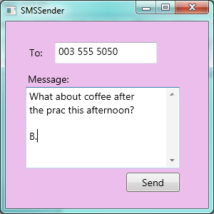

1. Introduction¶
The goal of these notes is to help you to think like a computer scientist. This way of thinking combines some of the best features of mathematics, engineering, natural science, philosophy and art. If you like any of those, you might find that you like Computer Science, too. Most of all, Computer Science is challenging and fun, and a good computer scientist is always surprised that people are willing to pay him or her to work on interesting problems and have fun all day!
The single most important skill for a new computer scientist is problem-solving. Problem-solving means the ability to formulate problems, think creatively about solutions, and express a solution clearly and accurately. As it turns out, the process of learning to program is an excellent opportunity to practice problem-solving skills. Programming is the process of translating problem-solving into a language that the computer can understand.
There is a bigger picture ...
We’re at university to toughen up our thinking skills. We understand things not only by remembering facts, but by mentally organizing the ideas, and relating them to things we already know.
New university students often have trouble. Here is a quote from page 9 of a document [1] written by those who’ve done a careful study of where the weaknesses are:
“Entering university students therefore have limited ability to solve unseen problems, to apply their knowledge flexibly and appropriately in varied contexts, to demonstrate a range of cognitive skills, to extract and integrate salient information in order to create their own, meaningful knowledge and to monitor their own learning.”
This here are some of the things we’ll really need if we’re going to be successful in our studies:
- to be able to extract and pick the salient (relevant, or important) facts and ideas,
- to relate these new ideas and facts to our existing knowledge,
- to spend time thinking about how we learn best and where our strengths are,
- to understand the ideas in such a way that we can apply them to unseen problems and use them flexibly!
So let’s get into some of the ideas from Computer Science, while we do the tough mental work of making sense of them and relating them all together!
| [1] | http://www.che.ac.za/sites/default/files/publications/QEP%20Framework%20Feb%202014.pdf |
1.1. What is a program?¶
A program contains instructions that tell the computer what to do. These instructions are given according to the rules of your programming language, and are sometimes called code. Programming languages are designed for humans, but the computer can only follow a different set of instructions that are less convenient for humans — it has its own internal language. So after writing a program, you can tell the computer to compile your program; it checks whether your instructions make sense and translates each of your programming language instructions into its internal language that it can follow. If everything you wrote makes sense to the computer, you can ask the computer to follow the instructions (this is called executing or running the program). We also say that instructions are executed.
The programming language you will be learning is called C# (pronounced “C sharp”). Some other popular computer languages you might have heard about are Java, Python, C, or Pascal.
Programming languages such as C# are extremely unforgiving. If a single letter or punctuation-mark of the program is out-of-place or missing, the program will not compile. Many programming languages are so strict that they don’t even allow you to alter the case of a letter – so if you type If instead of if, your program will probably fail to compile! Beginning programmers make many simple mistakes because they aren’t precise enough. With practice and caution, you will make fewer and fewer of these simple mistakes, until you eventually make no simple mistakes whatsoever.
1.2. What kind of programs will we start with?¶
Most modern programs have three main parts to them. Let us think about a program that sends SMS messages. It could look like this:

Part 1: The GUI — the Graphical User Interface is the part that determines what it looks like on our screen or on our device (phone, tablet, XBox, TV). The interface will contain buttons, sliders, text boxes, check boxes and so on. These parts that make up our GUI are called controls, because they let the user control what work the program does. (We’ll learn more about controls soon.) Part of the GUI designer’s job is to choose nice colours, text sizes, choose the fonts, and to lay out the different controls so that they are nicely organized, and the user of your program can see what needs to be done.
The GUI or interface is sometimes called the front-end of the application.
Part 2: The code-behind is the programming logic that carries out the tasks in response to what the user does. So, for example, when the “Send” button is clicked, there has to be some hand-written code (that we’ll soon learn to write in C#) to make the useful work happen. In this SMS example, the code-behind would probably check that the cellphone number had the correct number of digits, it might remove unnecessary spaces from whatever the user has typed in, it could check that the user did not type in any invalid characters (like xyz) in the number, it could check the length of the message, make sure the message was not empty. Then, if everything seemed okay, the program might use the third part to actually send the message.
Part 3: The back-end part of an application (
applicationis another name for a program) is responsible for long-term storage and other operations, like sending the SMS messages to the mobile network. So if we’re busy with on-line banking or we’re active on facebook, or we’re checking our available airtime, there will be some part of the application (often running remotely on another machine) that does this back-end work for us.
GUIs are often designed by well-paid graphic designers with good artistic taste and great colour sense. Our SMS example is not very pretty, which says something about the textbook author.
The user will interact with our program via its GUI: they will enter text, click buttons and drag things around. Actions that the user takes cause some events to happen. Those events will cause some code in the code-behind part of our application to be executed. And that is where we’ll do our magic that will make our program useful.
We’ll start off by learning to design and build a few GUIs. Once we can build simple GUIs, we’ll move along to learning about the events that happen, and we’ll write some code-behind. In this book none of our programs will be complex enough to have a third back-end part.
1.3. How do we get started?¶
We need a tool that allows us to design our GUIs, write some program code, and run and test our programs. The tool we’re going to use in this book is one designed exactly for this purpose: Visual Studio, a tool provided by Microsoft Corporation. So finding out a little about how the tool works is our next major objective, starting in the next chapter.
1.4. Glossary¶
In any new subject, the special terminology and words are important. We’ve summarized the main terms here. If one doesn’t know what the words mean, one can’t follow the ideas. So it is worth spending some time getting a really good understanding of what each word means.
- application
- Another name for a program.
- back-end
- One of the three parts of a modern application. The back-end often runs remotely (at our bank, or on facebook). See also front-end and code-behind.
- code-behind
- The part of an application that responds to what the user does and carries out the useful work of the program. See also back-end and front-end.
- event
- See the definition in the glossary of Chapter 3.
- front-end
- Another name for the GUI or interface to an application. See also back-end and code-behind.
- GUI
- A Graphical User Interface. This is the part of your application that the user can interact with, by entering text, clicking buttons, setting sliders, etc.
1.5. Exercises¶
Become familiar with a couple of computer or smartphone applications like a web browser, Google search, a chat application, email, a facebook application, or a game like Sudoku.
Identify each of the different controls (buttons, check boxes, places to type text, etc.) that the application offers the user.
When the application does something (like make the next move in a game, or display another web page, or check that we’ve entered some information correctly), can you figure out which things are happening on your own computer or phone, and which things are being done remotely on some back-end computer?
In your notebook, write down the most important ideas from this chapter, in just one line each. (Trying to get an idea down into one sentence or one short line is an important part of organizing it well in our minds.)